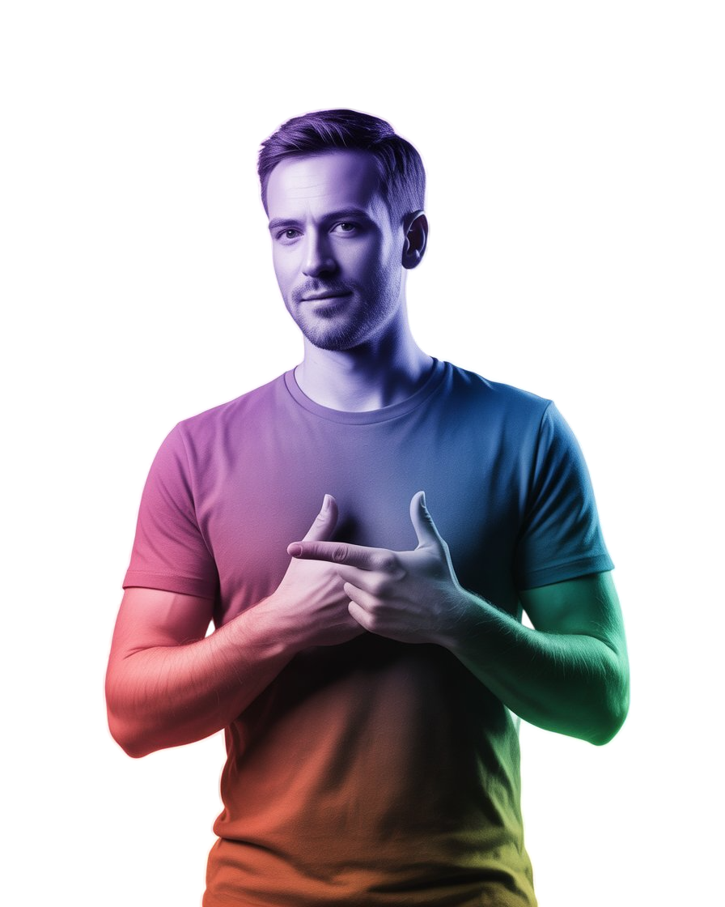

About Me
I’m Teeniv, an aspiring MERN Stack Developer passionate about building modern web applications. This portfolio marks my first steps into full-stack development.
Currently, I’m learning MongoDB, Express.js, React, and Node.js. My goal is to design cyberpunk-inspired interfaces and grow into a skilled developer who can bring creative ideas to life.
I enjoy experimenting with new technologies, creating small projects, and constantly pushing my limits to improve as a developer.